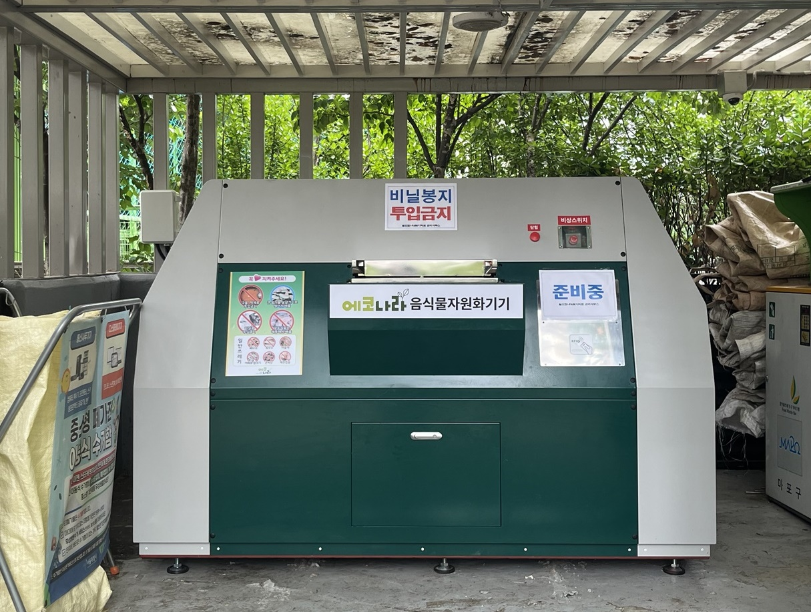

마포구, 공동주택 음식물쓰레기 대형감량기 시범운영
성산동 월드컵아이파크 2대 설치, 하루 198kg 처리

[시사포커스 / 김재록 기자] 마포구가 공동주택 음식물쓰레기 감량을 위해 성산동 월드컵아이파크(모래내로 9길 6)에 대형감량기 2대를 설치하고 시범 운영에 들어갔다. 대형감량기는 음식물쓰레기를 탈수·건조·발효 과정을 거쳐 발생량을 최대 약 80%까지 줄이는 장비로, 처리 후 남은 부산물은 별도 과정을 통해 사료나 퇴비로 재활용할 수 있다. 음식물쓰레기는 수분 함량이 높아 수거·운반과 처리 과정에서 비용 부담이 크고, 악취와 해충 발생 우려도 있어 공동주택에서의 배출 단계 감량이 중요하다는 판단이다. 구는 지난 4월 지역 내 90세대 이상 400세대 미만 공동주택을 대상으로 수요 조사를 실시했으며, 설치 공간과 전기·배관 공사 가능 여부 등을 검토해 월드컵아이파크를 시범 단지로 선정했다.
설치된 대형감량기 2대는 각각 하루 99kg씩, 총 198kg의 음식물류 폐기물을 처리할 수 있다. 마포구청은 약 1년간 기기 임차와 유지보수, 처리 후 발생하는 잔여물 처리 등을 지원하며, 전기요금은 공동주택이 부담하는 방식으로 운영된다고 밝혔다. 유동균 마포구청장은 '많은 세대가 함께 사는 공동주택일수록 음식물쓰레기를 줄이기 위한 공동의 노력이 중요하다'며 '이번 시범 운영의 감량 효과와 주민 만족도를 꼼꼼히 살펴 공동주택에 맞는 감량 정책을 마련해 나가겠다'고 말했다.
마포구는 이번 시범 운영 기간 동안 운영 현황과 주민 만족도, 감량 효과를 분석해 설치 대상 확대와 운영 방식 개선 여부를 검토할 예정이다. 이 밖에도 마포구는 공동주택 음식물쓰레기 감량을 위해 배출량에 따라 수수료를 부과하는 RFID 개별종량기를 운영하고, 감량 실적이 우수한 단지에 청소용품 등을 지원하는 인센티브 사업도 함께 추진하고 있다.